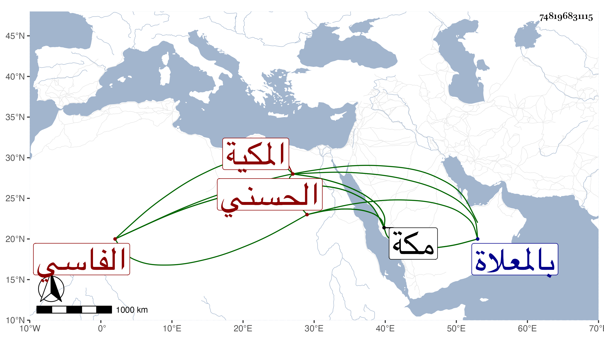

0902Sakhawi.DawLamic.ITO20230111-ara1.EIS1600.748196831115
Biography ID: 748196831115
368
ستيت ابنة الشريف على بن أبي عبد الله محمد بن محمد بن عبد الرحمن أم محمد الحسني الفاسي المكية . ولدت ببلاد التكرور وكان أبوها هناك وحملها إلى مكة فوصلت معه اليهافي سنة تسع وخمسين وسبعمائة وهي متميزة ونشأت بها فتزوجها ابن عمها الشريف أبو الفتح محمد بن أحمد الفاسي وولدت له أولادا وتأيمت بعده حتى ماتت في خامس جمادى الأولى سنة سبع وعشرين بمكة ودفنت بالمعلاة ، وكان فيها دين وخير . وهي والدة السراج عبد الطيف بن أبي الفتح الحنبلي واخوته .
